外拍活动NO.008 | 海宁丰士村老街的慢时光
2026.08.11 · 摄影笔记 · 丰士村·海宁·嘉兴 · Rx1RM2 (Sonnar T* 35mm F2)
拍完老茶馆，顺着附近的老街巷走了一段。时间不长，却很喜欢这里慢下来的感觉——旧房子、老店铺，以及那些仍然在街边过着日子的普通人。
拍完老茶馆，顺着附近的老街巷走了一段。
因为时间紧，只来得及匆匆走过一小段。没有特别去寻找什么，只是边走边看，倒觉得这里有一种很自然的慢。
旧房子、老店铺、街边吃饭的人，还有一些已经很少见的日常景象，都还安静地留在这里。
直接看照片。
 丰士老街入口旁的老桥面馆、街口摊位和来往的老人，把这里的日常一下子带到眼前。
丰士老街入口旁的老桥面馆、街口摊位和来往的老人，把这里的日常一下子带到眼前。
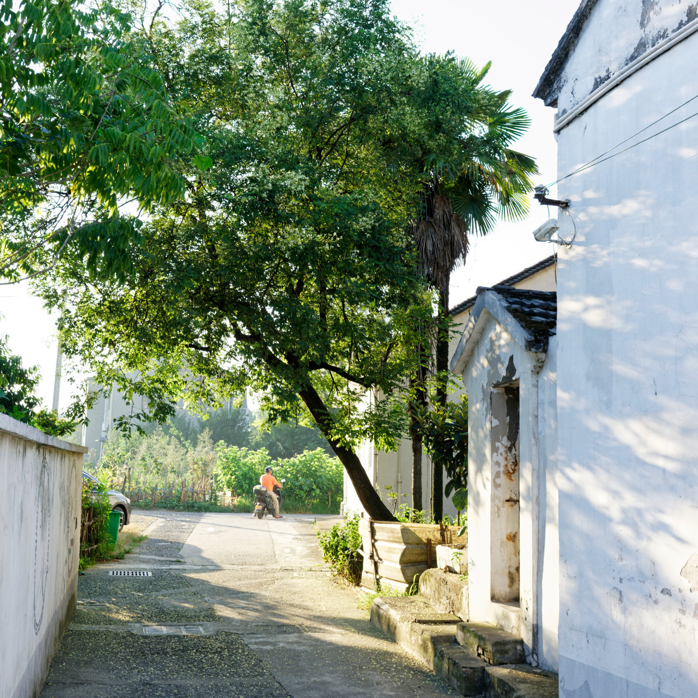
白墙老屋边的巷子被树影盖住，远处骑电动车的人刚好经过，时间像是慢了一拍。
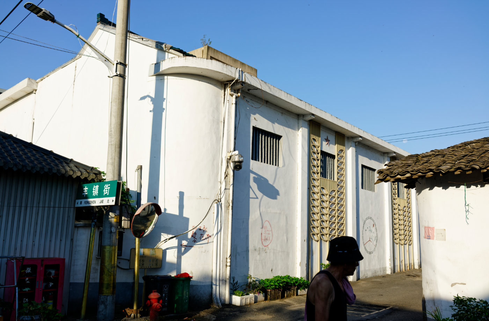
丰镇街的路牌、斜照的阳光和墙面的影子，构成老街转角处安静的一幕。
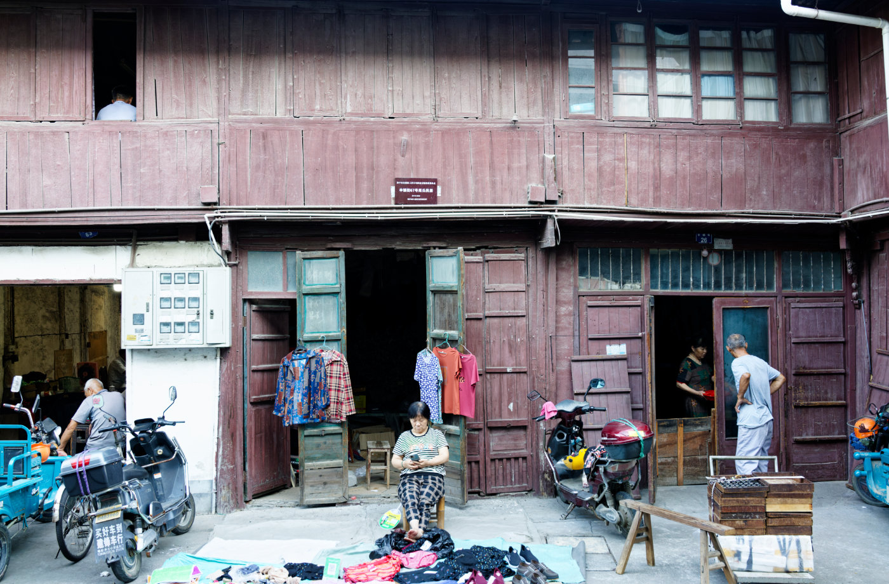
木楼下摆着衣服、鞋子和电动车，门里门外都是仍在继续的街巷生活。
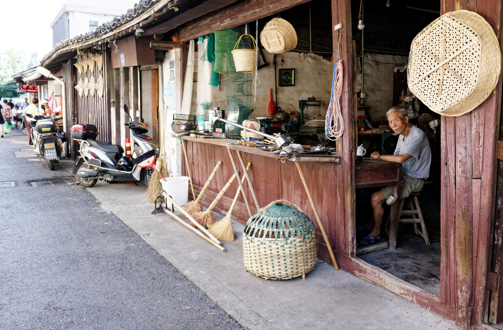
老店门口挂着竹篮、筛子和扫帚，老人坐在铺子里望向街面，像在守着一段旧时光。
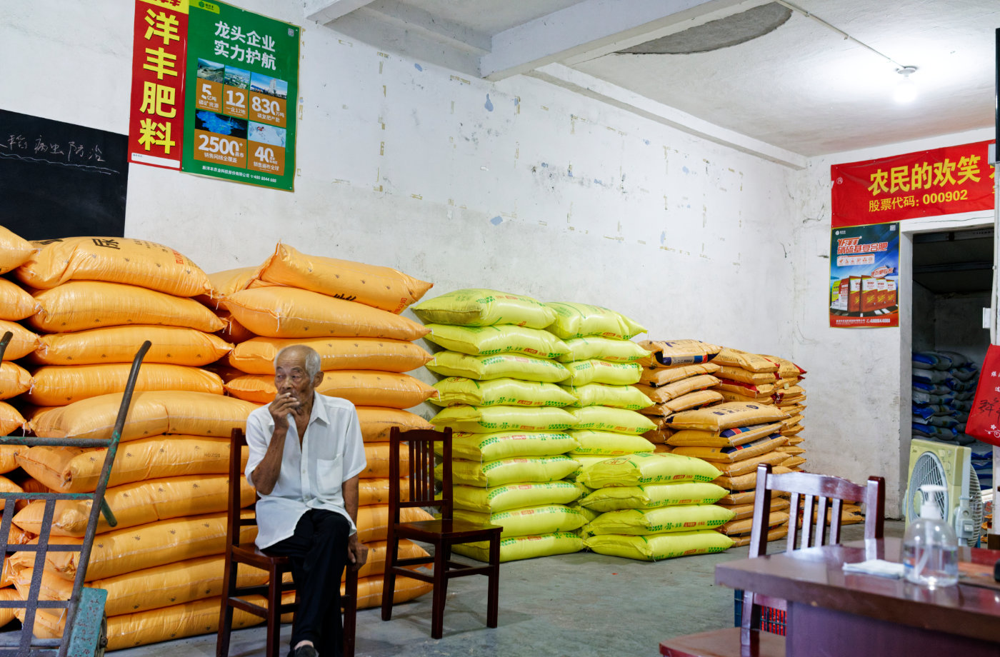
农资店里堆着一袋袋肥料，老人坐在椅子上抽烟，鲜亮的包装和斑驳墙面形成了很直接的对比。
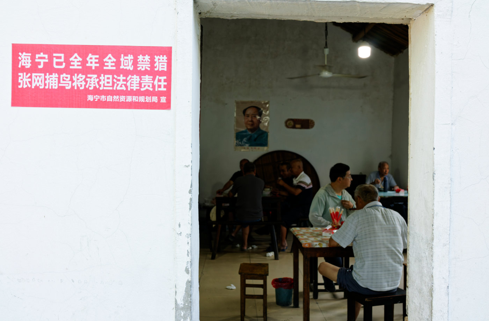
门口的红色禁猎告示之外，屋里几桌人正在吃饭聊天，老街的公共空间就这样自然展开。
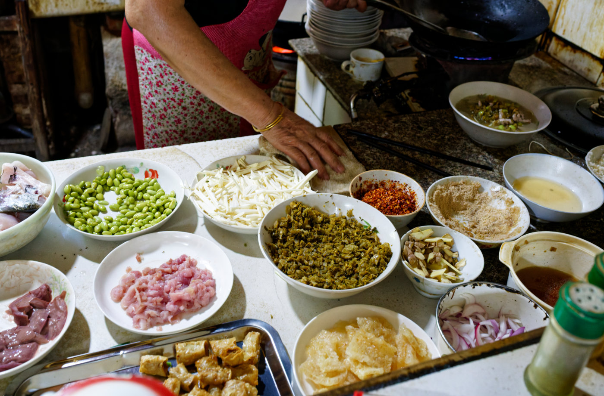
厨房台面上摆满鱼肉、毛豆、笋丝和调料，灶上的火还在烧，是街边小店最鲜活的一刻。
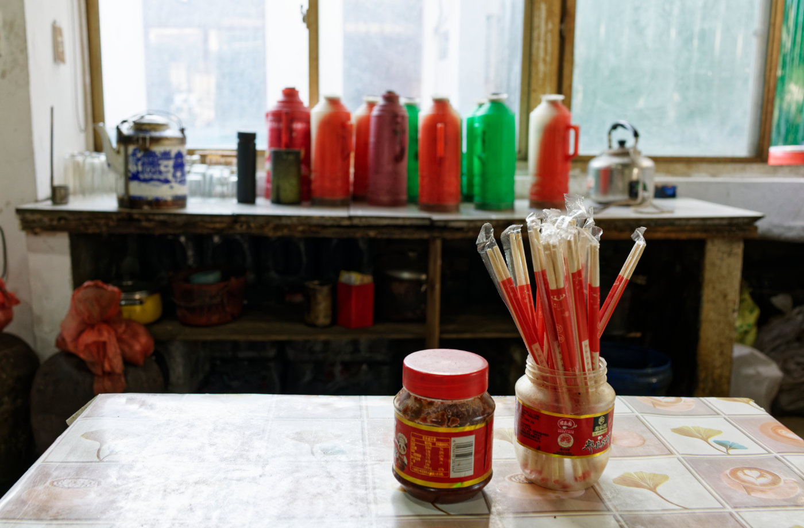
桌上的筷子、辣酱和窗边一排暖水瓶，组成一组很普通、也很有年代感的室内静物。
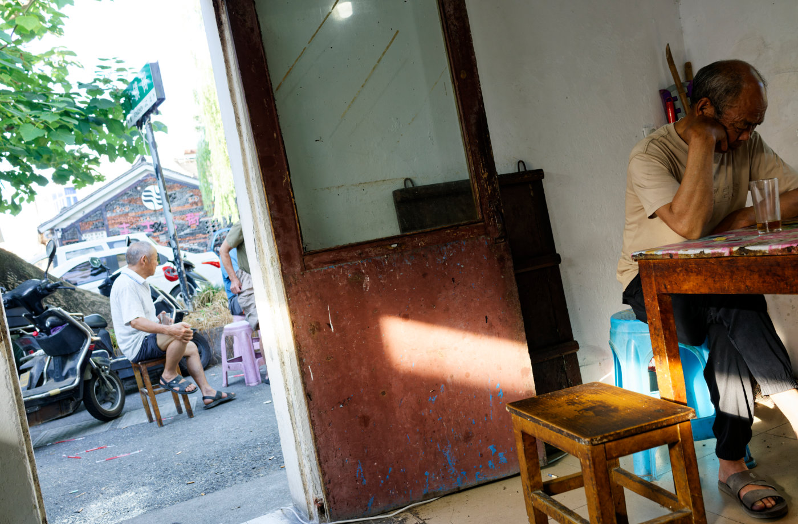
门里门外各坐着一位老人，中间旧木门上的一束光，把午后的安静分成了两半。
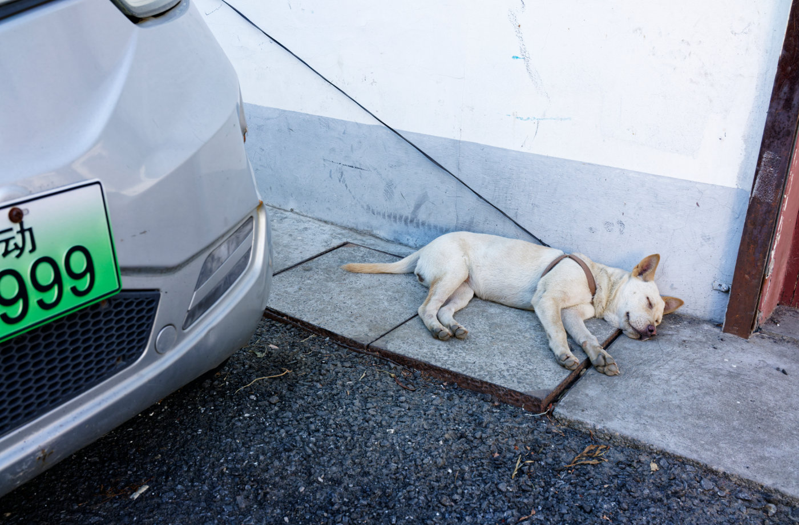
一只白狗拴在墙边睡着，旁边停着电动车，老街的慢也落在这样的小角落里。
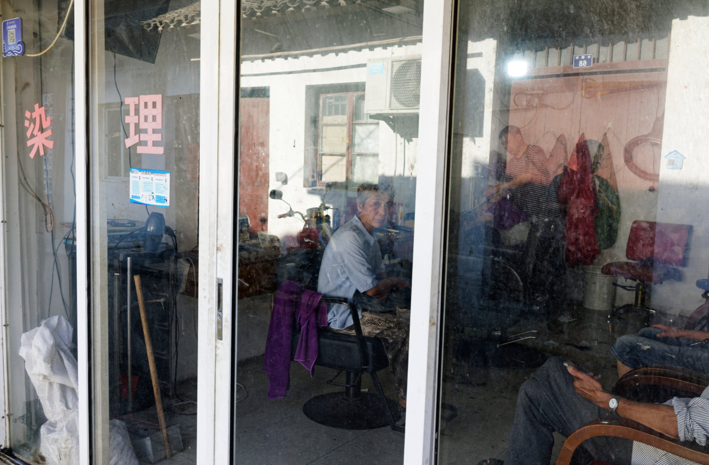
理发店玻璃上同时映出街对面的老屋和屋内等候的人，现实和倒影叠在一起。
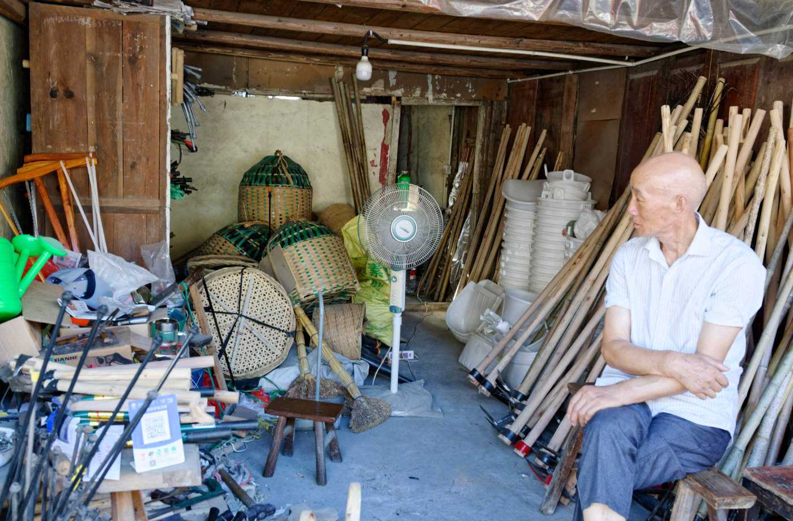
竹编物件与农具堆在屋里，老人坐在一旁悠然自得。
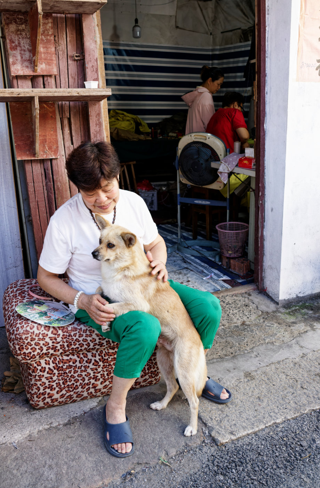
老房门口，老人抱着狗坐在阴影里，屋内还有人在忙，街边的亲近感很自然。
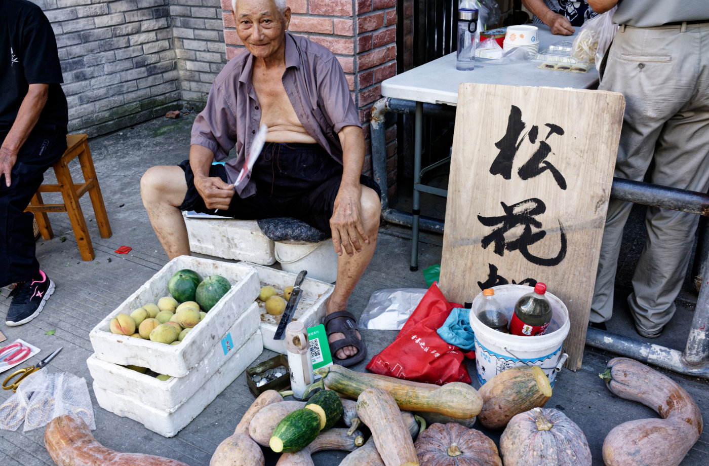
街边摊位上摆着南瓜、桃子和西瓜，还有牌子上写着松花糕，老人拿着扇子坐在一旁，像这段短短散步的收尾。